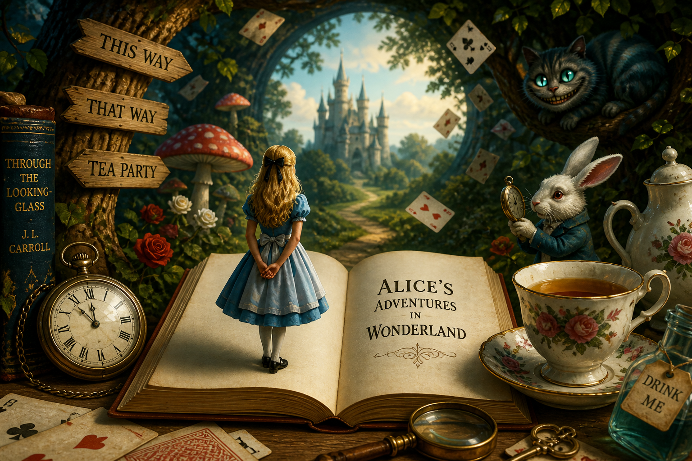

Mes
Projets

Site de découverte de livres
Un site permettant de rechercher et découvrir des livres grâce à une API, avec affichage des informations principales.

Portfolio Interactif
Mon portfolio personnel avec animations, mode sombre/clair et design moderne.
Travel Planner AI
Chatbot intelligent qui organise des voyages selon budget, durée et envies. Génère destinations, activités et planning personnalisé adapté au profil utilisateur.
Prédiction de survie - Titanic
Modèle de machine learning permettant de prédire la survie des passagers du Titanic à partir de données démographiques. Score obtenu : 0.77511 sur Kaggle.

Bookworm - NLP sur livres (Project Gutenberg)
Moteur NLP en CLI pour analyser des livres : diversité lexicale, topics, entités, résumé et similarité. Génération automatique de “book cards” synthétiques pour résumer efficacement chaque ouvrage.

Bookworm - NLP sur livres (Project Gutenberg)
Moteur NLP en CLI pour analyser des livres : diversité lexicale, topics, entités, résumé et similarité. Génération automatique de “book cards” synthétiques pour résumer efficacement chaque ouvrage.